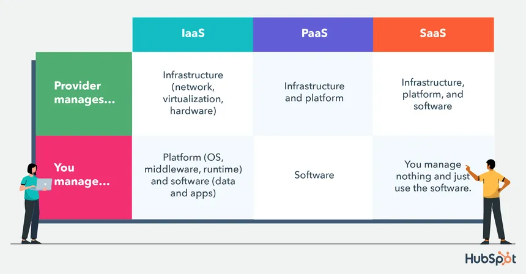
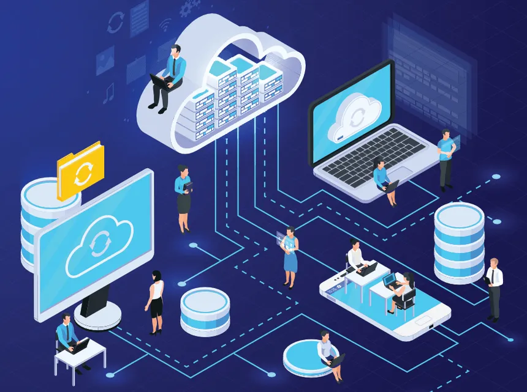
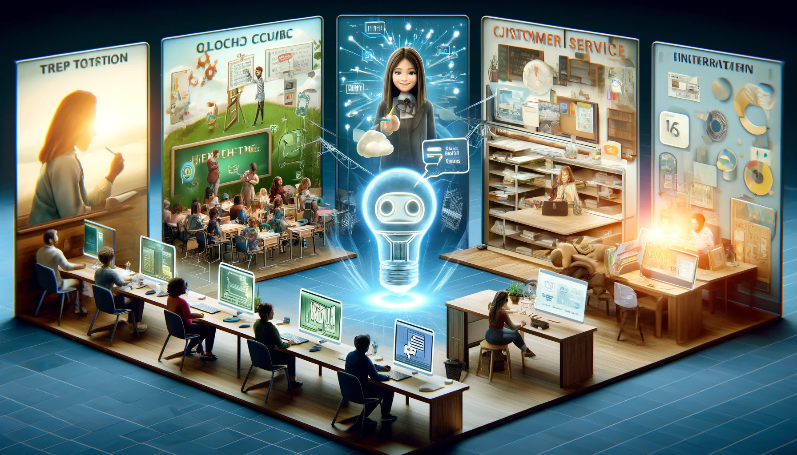
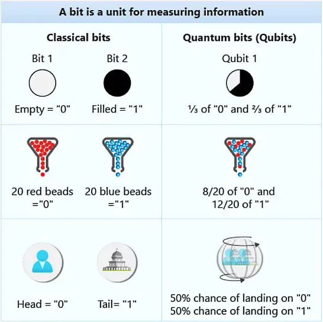

Cloud Computing Unveiled: Navigating the Future of Technology
Cloud computing has revolutionized the way we store, process, and manage data. From small startups to large corporations, learn how this technology is shaping the future.
Cloud computing has revolutionized the way we store, process, and manage data. From small startups to large corporations, learn how this technology is shaping the future.
In an era where digital innovation is the front runner of global progress, cloud computing stands out as a beacon of transformative technology. This powerhouse of digital computation has not only revolutionized the way we store and process data but has also paved the way for new possibilities in tech development, business strategies, and everyday conveniences. In this deep dive, we explore the intricacies of cloud computing, demystify its components, and forecast its trajectory in the evolving landscape of technology.
At its core, cloud computing is the delivery of computing services—including servers, storage, databases, networking, software, analytics, and intelligence—over the Internet ("the cloud") to offer faster innovation, flexible resources, and economies of scale. You typically pay only for the cloud services you use, helping lower your operating costs, run your infrastructure more efficiently, and scale as your business needs change.
Cloud computing is often categorized into three main types: Infrastructure as a Service (IaaS), Platform as a Service (PaaS), and Software as a Service (SaaS). Each type offers different levels of control, flexibility, and management, making cloud computing versatile and suitable for various business needs.

The appeal of cloud computing is multifaceted, offering significant benefits that include:

The future of cloud computing is bright and holds promising potential for further innovations. Emerging trends like hybrid cloud solutions, edge computing, and quantum computing are set to redefine the boundaries of cloud technology. Hybrid clouds allow businesses to combine the best of both worlds—private and public clouds—offering enhanced flexibility and deployment options. Edge computing aims to reduce latency and improve speed by processing data closer to the location it is needed. And quantum computing, though still in its nascent stages, promises to exponentially increase the processing power of computers, potentially transforming the capabilities of cloud computing.
As we've navigated the expanse of cloud computing, it's clear that this technology is not just a temporary phase but a foundational element shaping the future of digital innovation. Its impact spans across industries, driving efficiency, scalability, and new opportunities for businesses worldwide. Whether you're a tech aficionado, an entrepreneur, or simply an observer of the digital age, the evolution of cloud computing is a thrilling saga of technological advancement, one that promises to unfold new chapters of innovation and growth in the years to come.
Cloud computing is indeed the bedrock upon which the future of technology is being built. Its ability to democratize access to technology, foster innovation, and streamline operations makes it a pivotal force in the digital revolution. As we look to the horizon, the possibilities are as limitless as the cloud itself.
Engaging with cloud technology today means being a part of shaping tomorrow. So, here's to cloud computing—may it continue to unveil a sky full of opportunities and innovations, propelling us into a future where technology knows no bounds.
Explore the capabilities of ChatGPT, the AI phenomenon that's taking the digital world by storm. Learn how it's transforming interactions, its applications, and what the future holds for AI-driven communication.

In an era where digital communication has become paramount, ChatGPT stands out as a beacon of innovation, reshaping our interactions with machines in ways we've only begun to explore. This article dives deep into the realm of ChatGPT, the artificial intelligence chatbot developed by OpenAI, that has captivated the curiosity of tech enthusiasts, industry professionals, and casual users alike. Through its sophisticated design, ChatGPT is not just changing the game; it's rewriting the rules of digital engagement.
At its core, ChatGPT is built on the foundation of generative pre-trained transformer models, a fancy way of saying it's equipped with the ability to understand and generate human-like text based on the vast amounts of data it's been trained on. This isn't your average chatbot that responds with pre-programmed answers. ChatGPT learns from interactions, adapting its responses to provide more meaningful and contextually relevant information with each conversation.

The versatility of ChatGPT is one of its most striking features. From powering customer service bots that provide instant, 24/7 assistance to users around the globe, to serving as a personal tutor for students needing help with homework, the applications are as diverse as they are impactful.
Businesses are leveraging ChatGPT to automate routine tasks, enhance user engagement, and even drive innovation in product development. In education, it's breaking down barriers, offering personalized learning experiences that were once thought impossible. And for the everyday user, ChatGPT is a friendly assistant, ready to help with everything from drafting emails to generating creative content.
As we stand on the brink of this new digital frontier, the potential of ChatGPT and AI-driven communication tools is boundless. With advancements in natural language processing and machine learning, these technologies will become even more intuitive, more empathetic, and more indispensable to our daily lives.
The integration of ChatGPT into more platforms and services is inevitable, promising not only to enhance efficiency and productivity but also to foster deeper, more meaningful connections between humans and machines. The future of AI conversations is here, and it's not just about technology; it's about the extraordinary ways we can collaborate, innovate, and connect with the world around us.
ChatGPT is more than just a technological marvel; it's a harbinger of the future, a glimpse into a world where AI and humans coexist in harmony, enhancing each other's capabilities. As we continue to explore and expand the horizons of AI communications, ChatGPT stands as a testament to human ingenuity and the endless possibilities of artificial intelligence.
Cloud quantum computing combines the uncharted power of quantum mechanics with the accessibility of cloud technology, offering unprecedented computational capabilities. Discover how this synergy is poised to redefine innovation
In the ever-evolving landscape of technology, a new titan is emerging at the horizon—cloud quantum computing. This revolutionary fusion of quantum computing's sheer power with the widespread accessibility of cloud technology is not just an advancement; it's a complete overhaul of our computational capabilities. As we venture into this article, we'll unravel the mysteries of cloud quantum computing, its profound implications for various sectors, and how it's poised to redefine what's possible in our digital age.

At the heart of cloud quantum computing lies the principle of quantum mechanics—a branch of physics that explains the behavior of energy and materials on the smallest scale. Unlike classical computing, which relies on bits (0s and 1s) for data processing, quantum computing uses quantum bits or qubits. These qubits can represent and store information in a vast array of states, promising exponential increases in processing power over traditional systems.
The integration of quantum computing into the cloud democratizes access to this immense power. Previously, the cost and complexity of quantum computers limited their use to elite research labs. Now, cloud platforms are making quantum computing accessible to a broader range of scientists, developers, and businesses, enabling them to perform complex calculations that were previously unimaginable.
Cloud quantum computing is set to revolutionize industries by enabling breakthroughs in drug discovery, materials science, and cybersecurity, to name a few.
The journey into cloud quantum computing is just beginning. As technology advances, we anticipate a surge in quantum applications across more sectors, including finance, where quantum computing could optimize trading strategies and risk management, and logistics, where it could streamline complex supply chains.
Moreover, the education sector stands to gain immensely. By making quantum computing accessible via the cloud, educational institutions can offer students hands-on experience with quantum algorithms, preparing a new generation of quantum-ready professionals.
Cloud quantum computing is more than just a technological advancement; it's a paradigm shift in computing, opening new frontiers in research and development. As we continue to explore the potential of quantum computing, its integration with cloud technology ensures that its transformative power will not be confined to research labs but will be extended to industries, fostering innovation and driving progress.
The fusion of quantum computing and cloud technology heralds a new era of computational capabilities, promising to solve some of the most complex problems facing our world. As we stand on the brink of this quantum leap, one thing is clear: the future of technology is not just bright; it's quantum-powered.
As we delve deeper into this quantum realm, the possibilities are as vast as they are exciting. Cloud quantum computing is not just shaping our future; it's expanding the very boundaries of what we believe is possible, marking the dawn of a new era in technological innovation and application.